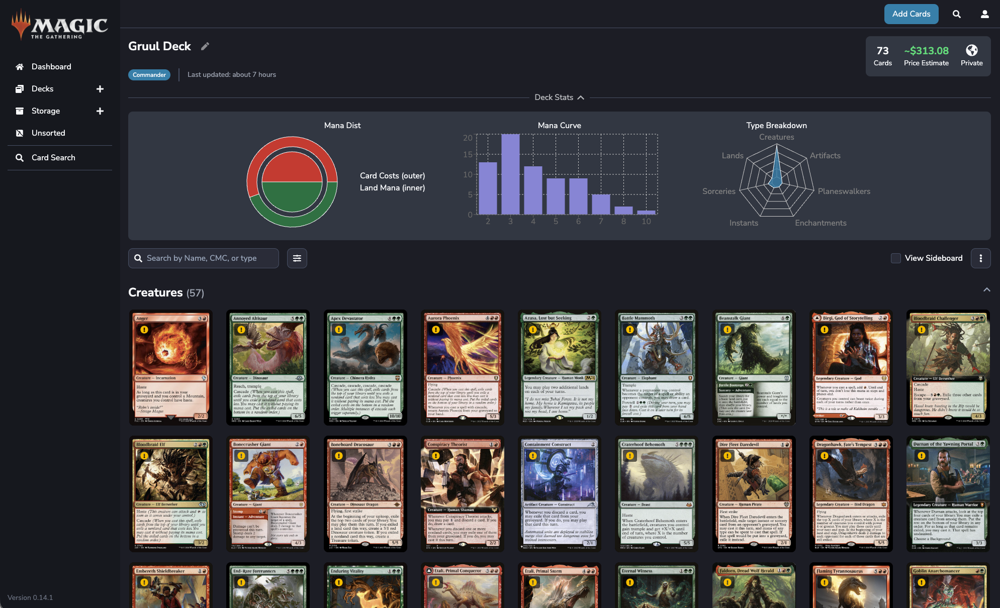
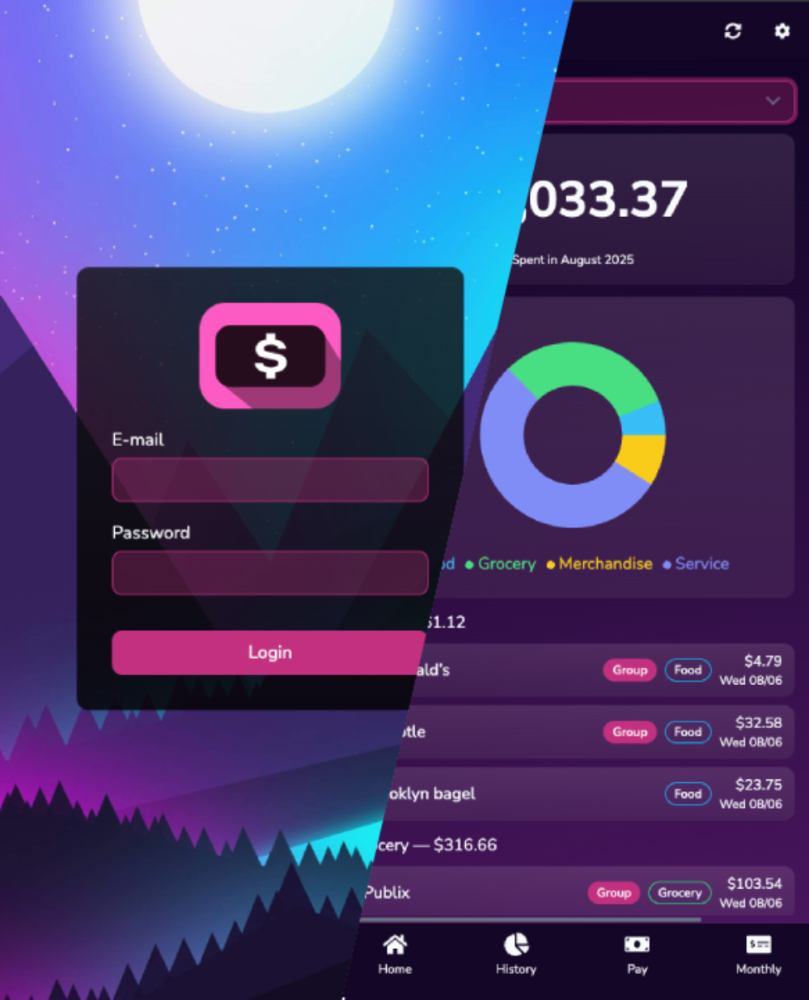

I am a Senior Software Engineer and Technical Lead with over a decade of experience in delivering robust solutions within the TypeScript and Node.js ecosystem. Driving business value through scalable architecture and the mentorship of high-performing teams. Ensuring technical decisions align with long-term product goals and operational efficiency throughout the entire organization.
Being a Software Engineer at heart, I find genuine joy when projects come to life and are working as planned. I am a goal-oriented self-motivator and a dedicated team player who thrives in collaborative environments where the shared energy of a team brings a vision to life. My skills do not end at the code, they extend beyond to help others. I strive to make the work for everyone around me easier, because no one likes the stress and wasting time, so I eliminate those wasted hours with automation.
Beyond the code, I'm a space enthusiasts that can stare into the night sky for hours and talk about the wonders of space and just how small we are in this universe. When I'm not at my desk, or staring into space, I like to play a card game called Magic The Gathering and building decks. There's a certain thrill when you're playing a deck and it's working the way you intended it to be played.
A selection of things I've built and are being self hosted in my homelab

An application that helps me organize and keep track of my cards.
You can also build decks and view the stats and cost for your deck
to see what needs improving.
if you would like a demo, send me a message and I'll get you
setup

This helps me keep track of the numerous credit cards my family uses. At a quick glance, I am able to know how much money has been spent and where and how much money we have left in the budget.
I created a homelab server to learn about Infrastructure and VMs. I have also introduced a NAS for storage, so now I have my own private cloud that I can access from anywhere in the world. I also have my own local AI model running in a VM. Now I have my own personal "ChatGPT" locally, accessible to me anywhere and all data stays with me.
Experience, education, and skills
I'm always open to new opportunities and interesting conversations. Feel free to reach out.
Say Hello